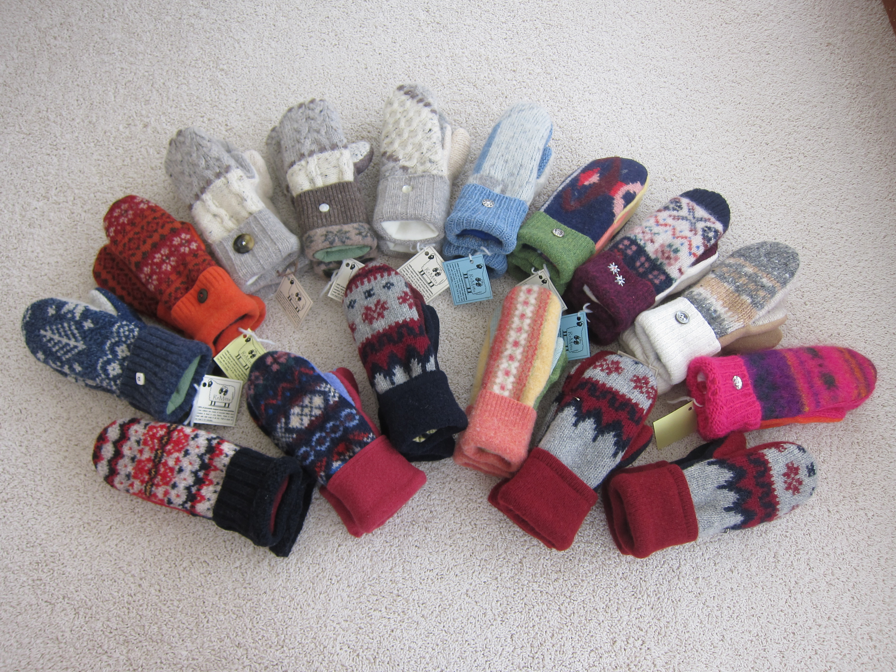

Volunteer with ReMitts

How to Volunteer
You don’t have to know how to sew to volunteer for ReMitts! Volunteers serve year-round every Tuesday at the ReMitts office in Fitchburg. In addition, there are many volunteer opportunities to work from home.
Volunteers are needed to:
- Pick up sweaters at thrift shops.
- Wash sweaters at the laundromat.
- Cut fabric from felted sweaters.
- Cut mitten pieces to create one-of-a-kind mitten kits.
- Cut fleece for lining.
- Sew mittens, using a sewing machine – at home or at ReMitts’ location in Fitchburg.
- Tack cuffs and attach buttons – at home or at ReMitts.
- Offer to sell ReMitts mittens at your business.